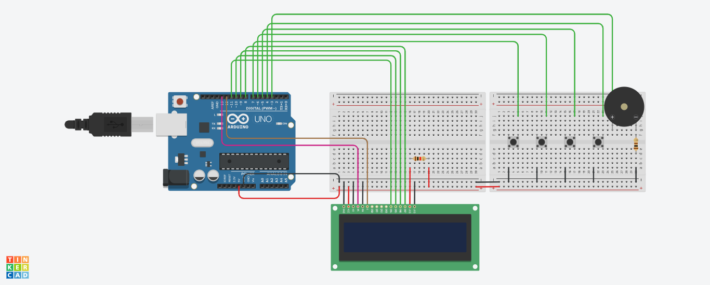

Ingénieur double-diplômé Grenoble-INP Phelma & INPT, je suis passionné par la conception de systèmes électroniques complexes, du rtl jusqu'au firmware.
Mon parcours m'a permis d'acquérir une double compétence rare : la rigueur de la conception matérielle (RTL) et l'agilité du développement logiciel bas niveau (C/RTOS).
Mon objectif : Contribuer à des projets innovants dans les domaines de l'IoT, de l'automobile ou de l'aérospatiale, où l'optimisation hardware/software est cruciale.
Ingénieur consultant indépendant, j'interviens auprès d'écoles et d'entreprises pour du conseil technique, de la formation, ou du développement sur mesure en systèmes embarqués et électronique numérique.
Mars 2026
Formateur en Systèmes Embarqués & IoT
SUPINFO (Lyon)

Mission : Animation d'un module intensif de 5 jours (35h) sur les systèmes embarqués.
Contexte : L'école souhaitait former ses étudiants de cycle ingénieur aux fondamentaux pratiques de l'embarqué, de l'électronique à la communication IoT, en privilégiant une approche "learning by doing".
Actions menées :
Conception pédagogique : Déploiement du programme complet (8 modules) et rédaction des scripts de déroulement.
Animation : Cours magistraux sur l'architecture des microcontrôleurs (Arduino), protocoles (UART, I²C), et l'électronique de base.
Encadrement technique : Supervision des TP sur simulateur (Tinkercad) et en hardware réel (débogage).
ArduinoC/C++UART/I²CTinkercad
1 / 2
Vous avez un besoin en formation ou en consulting technique ? Me Contacter